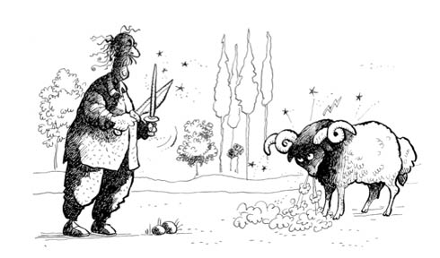
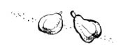

OSMAN HOCA VE ADAKLAR
Emirsultan Camii, Bursa’nın Eyüp Sultan’ıdır. Cami ve hemen bitişiğinde türbesiyle bütün Bursalıların, hatta başka şehirlerde yaşayanların uğrak yeridir. Yüzlerce yıllık taş bir yapı, duvarlarında güvercinler yuva yapsın diye küçük oyukları, bahçesinde ve civarında devasa üç dört çınar var. Bizim oturduğumuz ev de caminin önünden geçen sokakta, camiye elli metre mesafedeydi. Caminin önünde bir meydan, meydanın bir yanında hamam, diğer yanında bizim Emirbuhari İlkokulu bulunur. Ben de bu okulun öğrencisiyim bildiğiniz üzere. Caminin hemen arkasında adakların kesildiği bir yer var, o yerin on metre aşağısından da mezarlıklar başlar. Bazı günler okuldan çıkınca mezarlıkların arasındaki servi ağaçlarının altında saatler boyu saklambaç oynar, uçurtma uçururduk.
Televizyonun evimize girdiği yıllar eskidikçe seyrettiğimiz filmler de arttı. Bazı filmler mezarlıklarda geçer, hatta kazık kadar adamlar korkudan tir tir titrer, kaşları gözleri seğirir, biz de hayretle bunlar ne demeye korkuyor falan diye şaşar kalırdık. Caminin civarındaki mezarlıklar, inşaatlar, bahçeler, oyun alanlarıydı o zaman. Hâliyle korkulacak şey, sınıfta kalmak ya da sopa yemekti en fazla. İnsanlar aç kalmaktan bile korkmazlardı. İş elbette vardı, az ya da çok kazanç Kaf Dağı’nın önünde bir yerlerdeydi, alınıp satılacak çok fazla da şey yoktu zaten. Parası olanların olmayanlara göre sahip olduğu şeyler de fazla değildi hâliyle.
Adaklık kurban keseceklerin ilk gelecekleri yer de tabii ki bizim muhit olurdu. Caminin hemen arkasında burası için ayrılmış bir yer vardı. Yakınında da bir çeşme, çeşmeye bağlanmış kısa bir plastik hortum ki akan kokan bir şey kalmasın civarda.
Arkadaşlarla adak haberini aldık mı soluğu doğru orada alırdık. Adaklık koyundan bize de et ya da kürk düşer de tabaklatır omzumuza atar, eşkıyalığa çıkarız diye değil; maksat, sıradan geçen günlere bir hareket gelsin de, biz de oyalanalım diye.
Emirsultan’a taşındıktan sonra adak işine ilk şahit olduğum gündü, o günü size anlatayım. Bu işi orada halleden kişi Osman Hoca’ydı. Osman Hoca’yı ilk görüşüm; kırk küsur yaşlarında, tepesi tamamen kel, yanlarda bir samuraya yetecek kadar saçı olan, bıyıklı, kesinlikle şişman olmayan, orta boylu bile sayılmayacak biri. O gün üç metre kadar ötede, kıvrık boynuzlarıyla üç memurun ancak birleşip alabilecekleri irilikte bir de koç vardı.
Arkadaşlardan birine baktım: “Ne olacak şimdi?” Çocuk tecrübeli tabii, “Osman Hoca kesecek koçu!” dedi. Duyunca dudak büküp, “Bu koçu mu?” dediğimde arkadaşım bana boş boş bakmıştı.
Koç, Osman Hocamın beline yakın, cebbar, boynuzları nerdeyse üç tur kıvrımlı, melemeyip de böğürse kimsenin itiraz etmeyeceği bir görünümdeydi. Osman Hocam da küçük boy kıvamında, gömleğinin kollarını sıvamış, çeşmede abdest alıyordu. Bilmeyen biri görse, hocamıza, “Son abdestini al da duanı et” denmiş sanırdı. Dinamitle adak işi kabul olsa ilk bu hayvanda denenirdi. Maşallah Bursa’da bunun gibi bir tane daha koç varsa üçüncüsü yoktur. Allah var, koç ipi koparıp hocama beklenmedik bir tos vursa onu direkt cennetlik edecek durumda. Ben de diğer çocuklar gibi seyirciyim, Allah vere de şahit yazmasalar.
Adak sahibi yaşlı bir karı koca. Belli; yememiş içmemişler, emekli ikramiyelerini bu koça yatırmışlar. Artık ne adadılarsa belli ki kararlılar. Sırat köprüsünden kendileri gibi emekli bir çifti de aynı seferde geçirecek bir hayvanı bulup getirmişler. Koç, bu hanım teyzeyle bey amcayı sırattan geçirip geri gelse bir Allah’ın kulu, “Yav, senin ne işin var burada, seni kesmemişler miydi?” demez, ben kefilim. Maşallah öyle cevval, öyle yiğit ki, breh breh... Her bayram bir boynuzunu kessen, konu komşulara bir hafta şanın olur.
Osman Hocam çeşme başında abdest almayı bitirdi, boynundaki Bursa işi havluyla kollarını, elini, yüzünü kuruladı. Ayaklarındaki naylon terlikleriyle bir duruşu var ki, köşedeki süpürgeyi alıp bütün bahçeyi süpürecek sanırsınız. Adak sahibi teyzeyle amcaya doğru geldi, hâl hatır sordu, sohbet ettiler. Önceden de tanışıklıkları var ki laf lafı açtı. Bu arada koç da onlara bakıyor. Sohbet sırasında Osman Hoca da koça baktı. Belli ki gözüyle tarttı. “Aslında bu hayvanı almak bile büyük sevap, ben de kesmiş kadar oldum, haydi atlayın koçun üstüne, sizi eve kadar bırakıversin, ben de işime bakayım” demediyse muhtemelen abdesti aldık, dönmek olmaz diye düşündüğündendir.
Adak sahipleriyle sohbet bitince bıçakların olduğu yere geldi. Bıçaklar da havlu gibi Bursa işi. O zaman da şimdiki gibi, havlu, bıçak, şeftali dendi mi akla Bursa gelirdi. Bursa’da olup da başka memleketin bıçağıyla adak kesilir mi hiç! Bir arkadaşın amcası memleketin birinden kırmızı bir çakı getirdi diye mahallede konuşacak oldu da, en gariban arkadaşımız bile elindeki çakıya bakıp acımıştı.
Osman Hocam bir yandan koça bakıyor, bir yandan da elindeki bıçağı ince bir demire sürüp biliyor. Koç da ön ayaklarından birini yere vurmaya başladı. “Yiğitsen gel, elindeki kılıç olsa ne yazar” manasında bir de böğürdü ki, adak sahibi teyzenin de yüzü, “İster misin hayvan bizi köprüde sırtından atsın!” manasında buruştu.
Daha önce kurban bayramında kurban edilen birkaç koyun görmüşlüğüm var, sonuç az çok belli olurdu. Hatta bir keresinde seyrettikten sonra yemeden içmeden kesilmiştim. Bu seferki adak infazı, Bursa’da ilk kez şahit olduğum bir durumdu. Hayvanın cesametine bakınca, sonuç beraberlik kokuyor gibiydi. Beni heyecanlandıran biraz da buydu zaten. Hocam, kaybederse koça ne yapacaklarını düşünürken bir metre kadar urganla koça doğru yaklaştı. Boynuzlarından bağlı olan cengâver, hocama tüm heybetiyle bakarken vakit ikindi vaktiydi. Hocam koçu boynuzundan bağlı olan iple çeşmeye yakın bir yere getirdi, aralarında bir maraza çıkmadı. Bir yandan koçun sırtını sıvazlıyor, bir yandan da omzuna attığı urganı alıyordu. O zaman TV’de bile tekrar sistemi yok. Ne olduysa üç bacağından bağlı koç yan yatmış vaziyette hocamın ayakları dibinde meliyordu. Evet, böğürmenin yerini efendiden bir meleme almıştı. Durum o kadar hızlı oldu ki, “baştan tekrarlasak, göremedik!” falan yok, hâliyle gördüğümüz yanımıza kâr.
Hoca tülbentle gözünü bağladı hayvanın. O cebbar koç gitti, yerine kuzu yattı sanki. Hocamın dua okumasıyla koçun ayaklarıyla boşluğu dövmesi bir oldu. Çeşmenin yanındaki oyuktan başlayan suyolu kırmızı bir hâl aldı. Oradaki suyun rengi beyaza henüz dönmüştü ki hocamın yanakları körük gibi şişip inmeye başladı; koçun bacağına üfledikçe hayvanın kürkü kabarıyordu. Üç dakika civarında kürkü yarıya kadar soyulmuştu.
Adağın sahibi teyze kocaman gözlerle hocaya bakıyordu. Ben de bir yandan yarı hayret, yarı takdir duygularıyla, burada illa koç ya da hoca arasında bir tercih yapılacaksa mümkünse Osman Hoca’nın yanında olmakta fayda var diye düşünüyordum. Bir yandan da, acaba şike falan mı var diye arkadaşa bakıyordum. Gerçi Osman Hoca’nın koyun kesme olayını ilk kez gören bir tek bendim.
On dakika kadar geçmişti ki, koç her ne için adandıysa adak konusu muhtemelen yukarıdaki yerine ulaşmış, değerlendirmeye alınıyordu. Gerideyse çocukların bir kısmının boynuzlarından tuttuğu kocaman bir koçbaşı kalmıştı ki, buraya gelecek olan adaklıklara gözdağı olsa yeridir.
Osman Hocam koçun heybetinde olsa demek ki, ver eline kılıcı, sal düşmanın üstüne, akşama Bağdat tamamdır.
Koçtu, adaktı, kurbandı, Bursa’dayız artık. Bu konu burada kapanır mı! Civanımın Kurban Bayramı’nda beslediği Karagöz anlatılmadan bu konuyu kapamak olur mu! Ben unutsam zaten siz unutmazsınız. Erdoğan Amcam Ramazan kadar kurbana da titizdi. Ne yapar ne eder kesecek bir şey bulurdu. Anlatalım mı? Konudan dönenin kalemi kırılsın.
